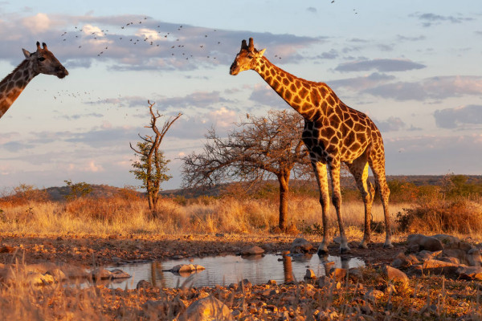
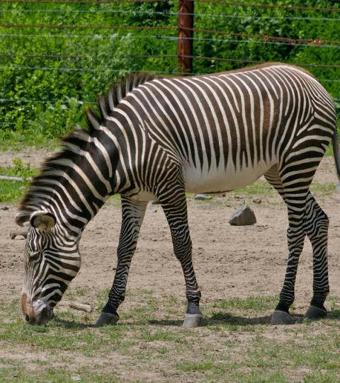

La Savane est une zone où prédominent les tapis de hautes graminées, d’arbres et d’arbustes disséminés,
que l’on trouve sous les climats tropicaux.Il existe donc une savane en Afrique au cœur de laquelle évolue une mixité d’’animaux sauvages,
des herbivores, des carnivores, des oiseaux. Découvrons les principales espèces animales que l’on peut observer lors d’un safari dans les grandes plaines d’Afrique.
Le Lion

Le lion : une puissante musculature
Le lion (Panthera leo) est un mammifère carnivore de la famille des félidés du genre Panthera (félins) qui possède une musculature très développée.
Son corps allongé et trapu s’appuie sur d'épaisses pattes musclées qui lui permettent de mettre à terre des animaux pouvant largement dépasser sa taille.
Un violent coup de patte peut provoquer la rupture des organes internes et même briser des os de sa proie.
Mâles et femelles très distincts chez les lions
Le dimorphisme sexuel est très marqué chez le lion : le mâle - plus grand et plus lourd que la femelle - mesure de 1,72 m à 2,50 m de long du bout du museau
à la base de la queue et pèse entre 145 et 225 kilos à l'âge adulte. La femelle adulte mesure de 1,58 m à 1,92 m sans la queue et pèse entre 83 et 168 kg.
La couleur du pelage varie du jaune crème au marron, avec une face ventrale plus claire : chamoisée chez le mâle, presque blanche chez la femelle.
Le lion vit en clan
Le lion d’Afrique est un animal grégaire : il vit en clan ou en famille. La surface du territoire (de 20 à 500 km2) et le nombre de proies déterminent la dimension
du groupe qui varie de trois à trente individus. Ce groupe se compose généralement de lionnes, de jeunes sujets et d’un mâle dominant chargé de protéger la tribu
lorsque les femelles partent chasser. Plutôt paresseux et inactif, le lion passe le plus clair de son temps à faire la sieste (entre dix et quinze heures par jour).
La Girafe

La girafe, emblématique mammifère au long cou, où et comment vit-elle ?
La girafe est aujourd’hui l’animal vivant le plus haut du monde avec son cou étonnamment long et ses immenses jambes. Aussi attachante que surprenante du fait de ses mensurations exceptionnelles,
la girafe est un animal de la savane africaine qui subjugue autant les enfants que les adultes. Découvrons en détails qui est ce mammifère emblématique, et pourquoi elle est désormais classée
parmi les espèces vulnérables.
Girafe : principales caractéristiques
La girafe (Giraffa camelopardalis) est un mammifère ongulé qui appartient à la famille des Giraffidae, au groupe des Ruminants et à l’ordre des Paridigités ou Artiodactyles (Artiocatyla).
Ce dernier terme signifie que la girafe possède des pieds dont le nombre de doigts est pair. Le poids de l’animal est supporté de façon égale par ses 3èmes et 4èmes doigts.
Girafe : une espèce vulnérable
Le nombre de girafes a diminué de plus de 40 % durant les 35 dernières années. Elle a totalement disparu des régions de l’Afrique ouest et le nombre d’individus a chuté de 60 % à l’Est.
La girafe est aujourd’hui classée par l’IUCN parmi les espèces vulnérables. Sont parmi les espèces en danger la girafe Massaï et la girafe Réticulée, et parmi les espèces en danger
critique d’extinction la girafe Kordofan et la girafe Nubienne. Prédateurs, chasseurs, braconniers sont parmi les responsables de la disparition silencieuse des girafes.
Grâce aux zoos du monde entier, on tente de favoriser la reproduction des girafes et d’éviter la consanguinité. Reste à espérer que cela suffira à sauver l’espèce, mais le temps presse…
Le Zèbre

Le zèbre est un cheval rayé
Le zèbre appartient à l’ordre des périssodactyles qui regroupe les ongulés à un doigt. Membre de la famille des équidés, il hennit, porte des sabots, une crinière,
se dresse sur de longues et fines pattes munies d'un système de blocage articulaire lui permettant de somnoler debout. En réalité, le zèbre a tout d’un cheval à deux exceptions près :
sa robe à rayures et son caractère indocile. Toutes les tentatives de domestication du zèbre ont en effet échoué. À grand renfort d’esquives, de ruades, de morsures, de coups de sabot
(qui peuvent briser la mâchoire d’un lion), cet animal interdit quiconque de l’attraper au lasso ou de le harnacher.
Le zèbre : 100% végétarien
Herbivore, le zèbre se nourrit essentiellement d'herbes, de plantes, de feuilles, de graminées, de jeunes pousses, d’écorces ou encore de bourgeons qu’il saisit avec ses incisives coupantes
puis broie avec ses dents jugales. Pour assimiler la cellulose végétale de sa nourriture, son système digestif abrite des bactéries qui décomposent et font la synthèse de cette cellulose.
L’équidé boit une fois par jour en saison sèche et vit de préférence à proximité d’un point d’eau.
Les zèbres solidaires face aux prédateurs
Grâce à ses oreilles mobiles, le zèbre possède une ouïe très fine. Doté d'yeux à implantation latérale, il jouit d’une excellente vision qui lui permet de détecter rapidement une menace.
Cet animal véloce peut courir jusqu’à 65 km/h et se montrer très agressif. Sa principale arme de défense repose sur un coup de sabot puissant qui, infligé dans la tête, peut gravement blesser
un animal voire le tuer. Les groupes de zèbres tendent à se rassembler afin de former de grands troupeaux qui migrent en compagnie des gnous et des antilopes pour renforcer leur protection
face aux prédateurs. L’entraide est souvent pratiquée par les équidés qui alertent leurs congénères d’un danger à l’aide d’un cri et peuvent encercler l’ennemi pour l’intimider.